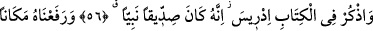
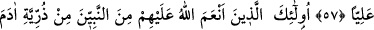
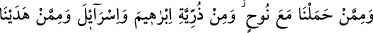
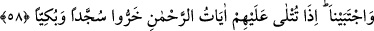
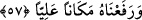

HZ. İDRÎS’İN MAKÂMI
56. Kitap’ta İdris’i de an. Şüphesiz o, çok doğru idi, bir peygamberdi.
57. Onu yüce bir yere yükseltmiştik.
58. İşte bunlar; Allâh’ın nimet verdiği peygamberlerden, Âdem neslinden, Nûh ile
beraber gemide taşıdıklarımızın neslinden, İbrâhim ve İsrâil (Yakûp) neslinden, yol
gösterdiğimiz ve seçtiğimiz kimselerdendir. Onlara Rahman’ın âyetleri okunduğu
zaman ağlayarak secdeye kapanırlardı.
“Kitap’ta İdris’i de an” İdris (a.s.) Hz. Nûh’un babasının dedesidir. Nûh ise Lemek
b. Metuşaleh b. Ahnûh, yâni İdris Peygamber (a.s.) b. Yerid b. Mehlâyil b. Kaynân b.
Anûş b. Şit b. Âdem’dir. İdris (a.s.) Hz. Âdem’in ölümünden yüz sene önce doğmuştur.
Hatîb’in Ravza’sında böyle geçmektedir. Kâşifî şöyle der: “Câmiu’l-usûl’de İdris
(a.s.)’ın Hz. Âdem’in vefâtından yüz sene sonra doğduğu söylenmektedir.”
Ölçü ve tartıyı ilk icat eden, Allah yolunda ilk defa silah kuşanıp cihad yapan ve
Kâbil oğullarını esir alan, kalemle yazan, hesap ve yıldızlar ilmine bakan, elbise diken -
daha önce derileri giyiyorlardı- ve pamuk elbiseyi ilk giyen İdris (a.s.)’dır. İdris kelime
olarak ders kelimesinden türemiştir. Hz. İdris’e bu adın verilmesi, çok ders görmesi
sebebiyledir. Çünkü Allah Teâlâ’nın ona otuz sahife indirdiği rivâyet edilmiştir.
“Şüphesiz o, çok doğru idi” bütün davranış ve hallerinde doğruluğu elden
bırakmazdı. “Bir peygamberdi” birincisini; yâni çok doğru olmasını tahsis etmektedir.
Çünkü her sıddîk nebî değildir.
Abbâs b. Atâ şöyle demiştir: “Mürsellerin en aşağı mertebesi nebîlerin en üst
mertebesidir. Nebîlerin en aşağı mertebesi sıddîkların en üst mertebesidir. Sıddîkların
en aşağı mertebesi ise mü’minlerin en üst mertebesidir.”
57. Onu yüce bir yere yükselttik.
“Onu yüce bir yere yükselttik.” Onun yükseltildiği yer, göğün dördüncü katıdır.